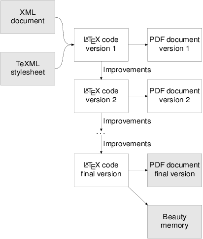
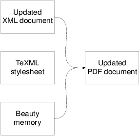

Consodoc converts XML to beautiful, printable documents.
Automatically generated documentation isn't necessary ugly. The only excuse is the current state of the art with tools that suck. Consodoc is probably the only publishing tool that concentrates on the beauty of the result.
Control over the artefacts. Automatically generated documentation is often poor quality. Unlike other publication systems, Consodoc admits the problem and gives you power to polish the roughness.
Specialists available. Many LaTeX developers already have knowledge of technical publishing and only need the basics of XSLT and Consodoc to start working.
You can rely on Consodoc. It has passed both unit and acceptance testing. We add new tests and re-run existing tests after each, even trivial, code improvement.
No vendor lock-in. All data formats used by Consodoc are standards. At any moment, you can take data from Consodoc and publish the data using other tools, or even manually.
Adaptable to your workflow. We wrote Consodoc with extensibility in mind. It is based on open source software and is itself open source. You may modify the sources for your purposes.
Contractors available. Consodoc employs popular technologies: XML, XSLT, LaTeX, SCons, and Python. Many developers around the world are ready to work with you.
Premium support. Since we are a small group, you get support directly from the Consodoc developers and not from naive support drones.
Premium price. Small working groups can afford Consodoc and thus avoid spending resources on products that can cost thousands of dollars.
The main requirements are:
Details are in the User's Guide.
Corporate Windows™ users might benefit from a hardware appliance with Consodoc pre-installed. Contact us directly for details.
Submit your questions, suggestions and comments to the support forum. E-mail support is available for registered users only; the address is <support@consodoc.com>.
Initial:

Somewhat later:
